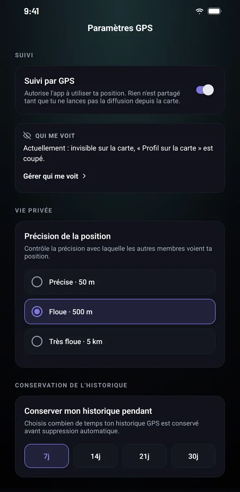

Sécurité à moto : alerte SOS et partage de trajet avec vos proches
IzenRide inclut gratuitement des outils de sécurité pour chacun de vos trajets : une alerte SOS vers les membres à proximité, le suivi en direct par vos proches et un contrôle précis de ce que les autres voient de vous.
- Inclus gratuitement
- Suivi sans application pour vos proches
- Zones de confidentialité
- Données hébergées dans l'UE

Prévenir les membres à proximité.
Le bouton SOS de la carte permet de demander de l'aide aux membres IzenRide autour de vous. La fonction est incluse pour l'ensemble des membres.
- Un décompte de 10 secondesLe bouton SOS lance un décompte, que vous pouvez annuler en cas d'appui involontaire.
- Votre position transmiseSans annulation, votre position exacte est transmise aux membres IzenRide à proximité, qui peuvent vous répondre.
- Vos contacts d'urgence à portée de mainChaque contact d'urgence peut être appelé directement depuis l'application. IzenRide ne les prévient pas automatiquement.
- Le 112 toujours affichéLe numéro d'urgence européen reste affiché à l'écran.
L'alerte SOS ne remplace pas les secours. C'est un dispositif d'entraide entre membres. En cas d'accident ou de danger immédiat, appelez le 112.
Vos proches vous suivent en direct.
Un lien sécurisé permet à vos proches de suivre votre position, votre vitesse et votre heure d'arrivée estimée, sans installer l'application ni créer de compte.
- Protégé par un code à 5 chiffresSeules les personnes à qui vous donnez le code accèdent au suivi.
- Actif écran éteintLe partage continue pendant que le téléphone est en veille.
- Expire après 24 heuresEt peut être révoqué à tout moment.
Ce que les autres voient de vous.
Le suivi GPS n'est utilisé que si vous l'autorisez, et rien n'est partagé tant que vous ne lancez pas la diffusion depuis la carte. Vous choisissez ensuite la précision de votre position.
- Précise : à 50 m près.
- Floue : dans un rayon de 500 m.
- Très floue : à 5 km près, à l'échelle de la ville.
- Masquée : vous n'apparaissez pas sur la carte.
Jusqu'à 5 zones de confidentialité, chacune avec son rayon, vous rendent invisible autour des lieux de votre choix. L'historique de position est supprimé automatiquement après 7 jours, ou jusqu'à 30 jours avec Premium.

Vos données restent les vôtres.
Les engagements d'IzenRide sur vos données personnelles, détaillés dans la politique de confidentialité.
Lire la politique de confidentialitéIzenRide ne vend, ne loue ni n'échange vos données personnelles.
Aucun profilage publicitaire ni notation de votre conduite.
Puis supprimé automatiquement (30 jours avec Premium). Vos trajets peuvent être supprimés à tout moment.
La base de données est hébergée dans l'Union européenne, à Francfort. Export des données et suppression du compte depuis les réglages.
Ce que l'application ne fait pas.
- Pas de détection de chute : l'alerte SOS se déclenche manuellement.
- Pas d'alerte automatique à vos proches : vous les appelez depuis l'application.
- Pas encore de signalement de dangers entre membres.
Les bons réflexes de sécurité à moto.
Bien s'équiper
Le casque homologué et les gants certifiés CE sont obligatoires, pour la personne qui conduit comme pour celle qui l'accompagne (les gants depuis le 20 novembre 2016). Un blouson, un pantalon et des bottes adaptés, ainsi qu'un gilet airbag, protègent davantage.
Avant de partir
Vérifiez la pression des pneus, l'éclairage et les freins. Enregistrez vos contacts d'urgence dans l'application et partagez votre trajet avec un proche. Sur un long trajet, faites une pause environ toutes les deux heures.
En cas d'accident : protéger, alerter, secourir
- Protéger : balisez la zone et mettez-vous en sécurité.
- Alerter : appelez le 112, ou le 15 (SAMU), le 18 (pompiers), le 17 (police) ; le 114 par SMS pour les personnes sourdes ou malentendantes.
- Secourir : ne retirez jamais le casque d'une personne blessée et ne la déplacez pas, sauf danger immédiat.
Sécurité à moto : vos questions
Une autre question ? Écrivez-nous à support@izenride.com.
L'alerte SOS d'IzenRide appelle-t-elle les secours ?
Non. Elle transmet votre position exacte aux membres IzenRide à proximité, qui peuvent vous répondre, et vous permet d'appeler directement vos contacts d'urgence. Elle ne remplace pas les services de secours : en cas d'urgence, appelez le 112.
IzenRide détecte-t-elle les chutes ?
Non. L'alerte SOS se déclenche manuellement depuis le bouton de la carte. Aucune alerte automatique n'est envoyée à vos proches.
Mes proches doivent-ils installer l'application pour suivre mon trajet ?
Non. Ils ouvrent un lien sécurisé, protégé par un code à 5 chiffres, sans application ni compte. Le lien expire après 24 heures et vous pouvez le révoquer à tout moment.
Puis-je rouler sans être visible sur la carte ?
Oui. Rien n'est partagé tant que vous ne lancez pas la diffusion depuis la carte. Vous pouvez aussi flouter votre position (500 m ou 5 km), la masquer, ou définir jusqu'à 5 zones de confidentialité.
Où sont hébergées mes données ?
La base de données est hébergée dans l'Union européenne, à Francfort. IzenRide ne vend, ne loue ni n'échange vos données personnelles.
Tout IzenRide, en détail.
Téléchargez
IzenRide.
Disponible gratuitement sur Android et iPhone, en 9 langues. Créez votre compte en quelques minutes et paramétrez votre visibilité dès la première utilisation.